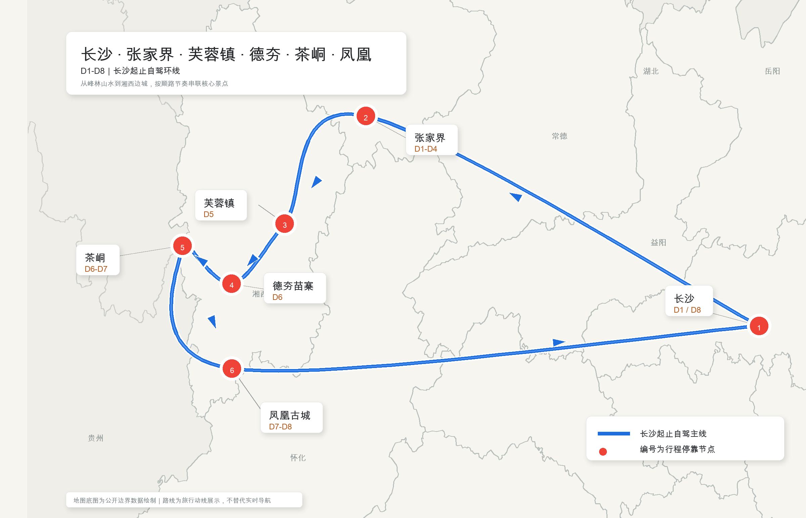
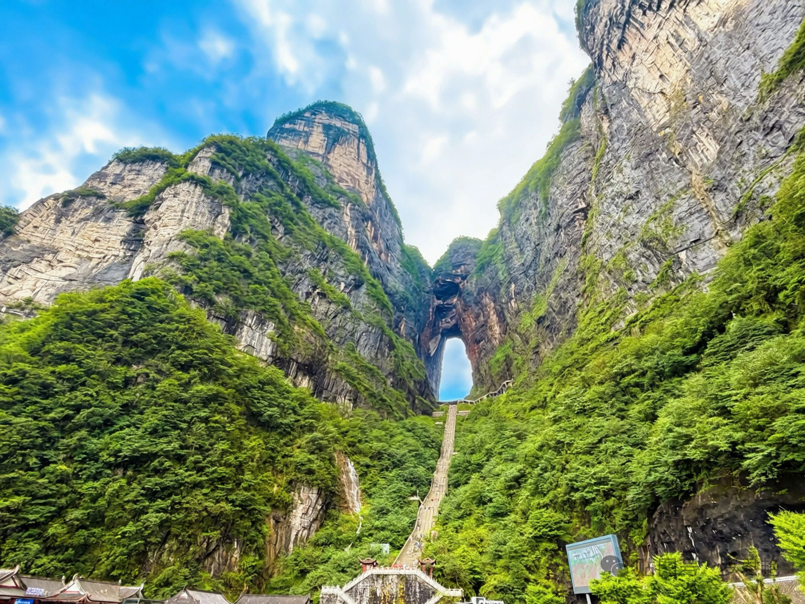
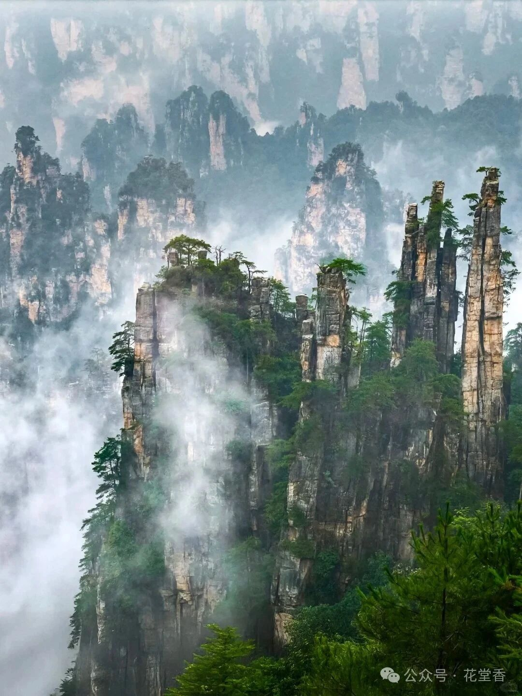
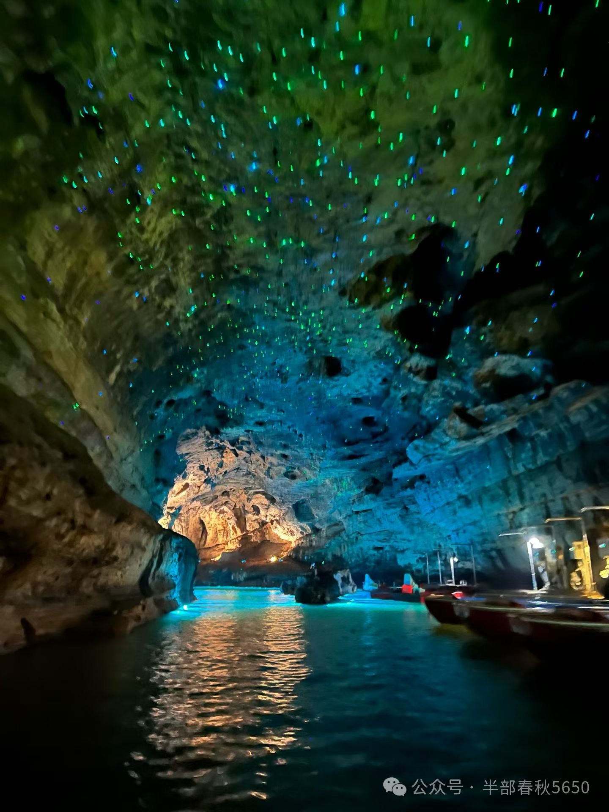
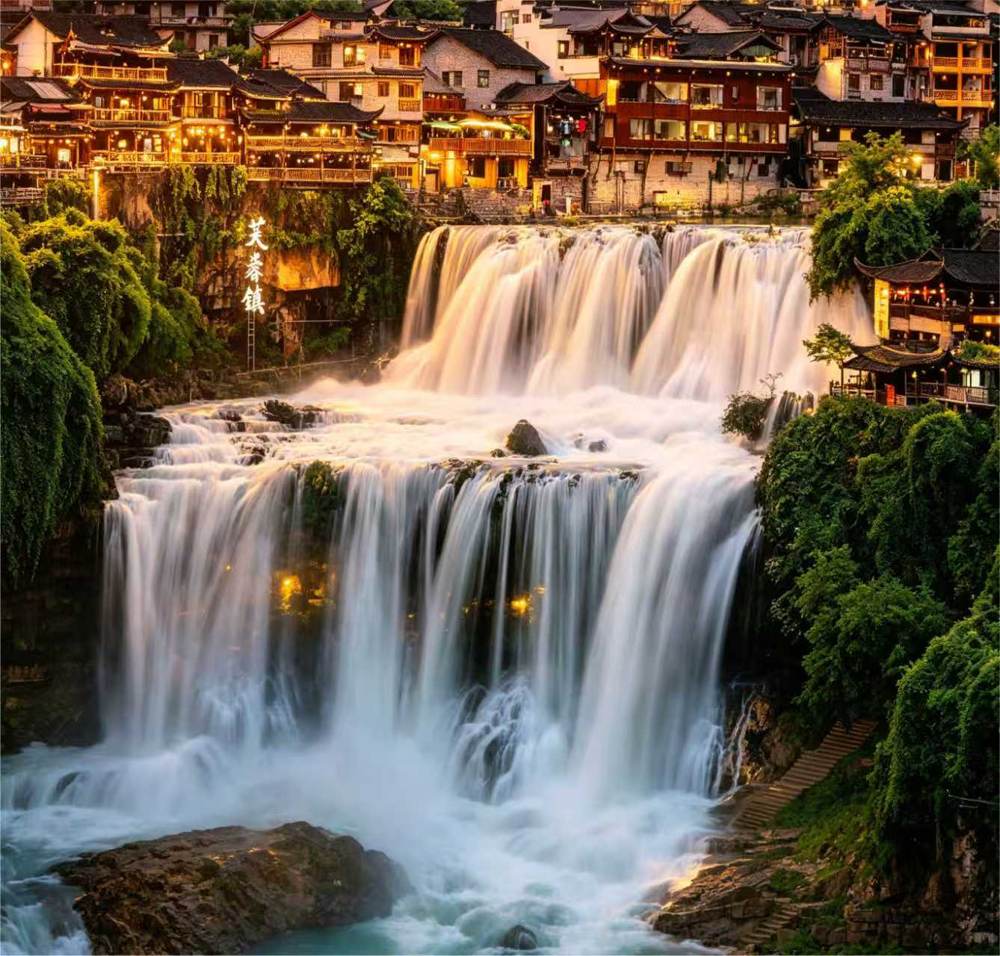
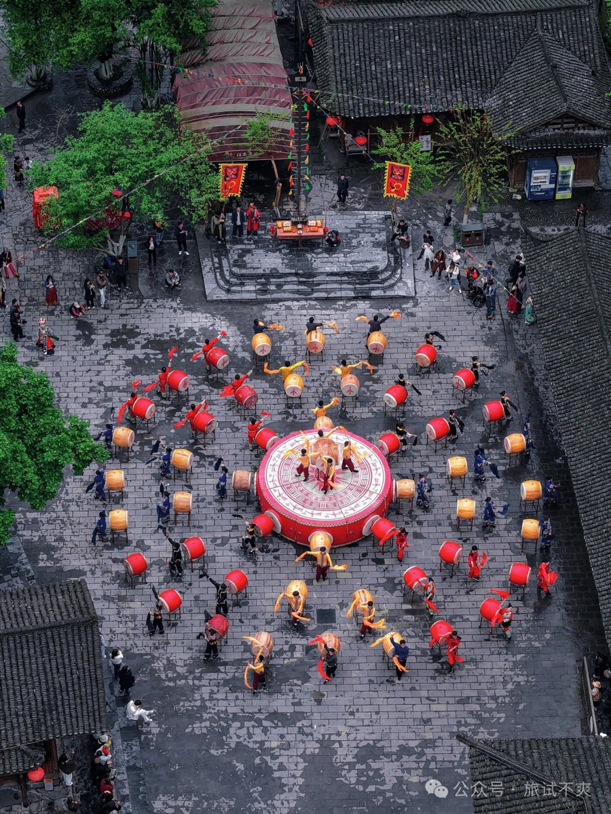
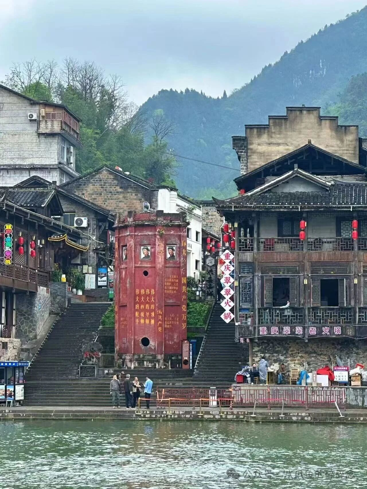
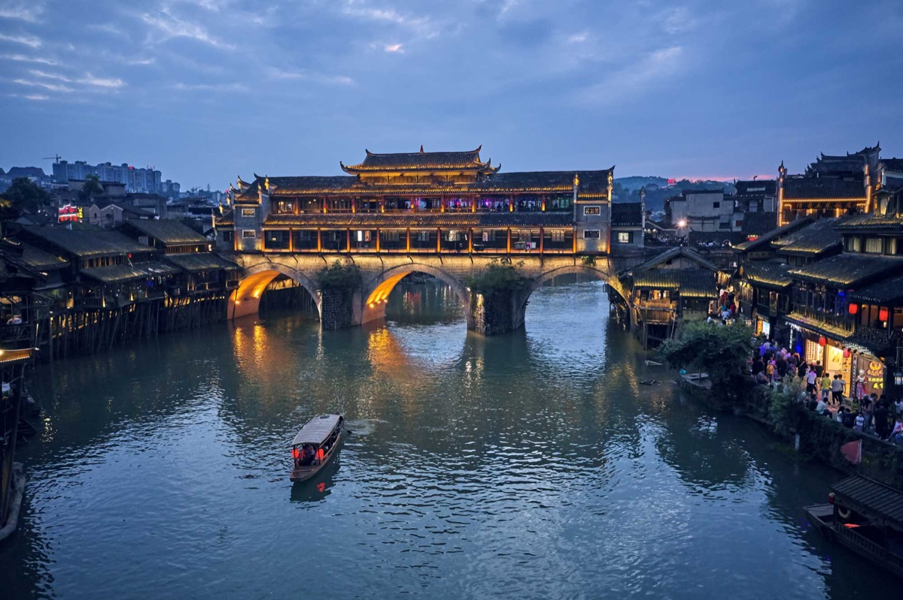
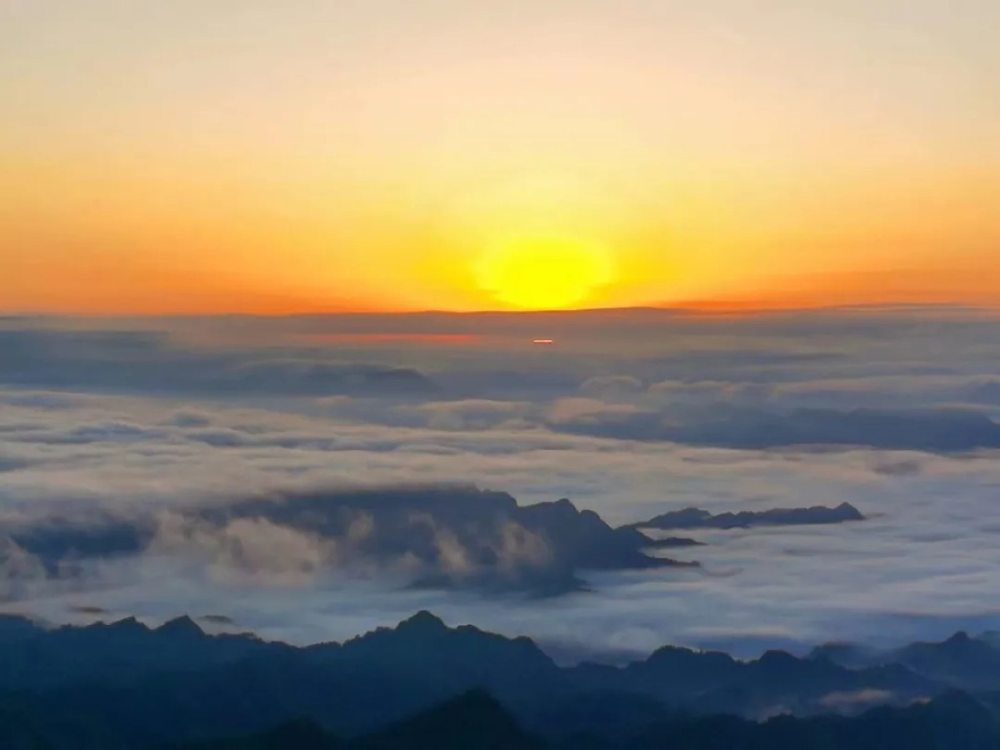

线路总览
D1 抵达张家界；
D2-D4 在张家界按天气切换三条核心线路；
D5 住芙蓉镇看瀑布夜景；
D6 看矮寨大桥和德夯苗寨后住茶峒；
D7 慢逛茶峒，下午驶过矮寨大桥前往凤凰；
D8 返程六安。

旅途看点
天门山国家森林公园

张家界国家森林公园

黄龙洞

芙蓉镇

矮寨大桥
德夯苗寨

茶峒/边城

凤凰古城

八面山云海

六安 → 长沙 → 张家界
大交通参考 G637：六安 08:42 → 长沙南 11:50
车程长沙南站取车后前往张家界市区：约 350 公里/5小时
摘要搭乘上午高铁抵达长沙，租车后下午自驾前往张家界市区民宿
六安 → 张家界
车程约 790 公里；含休息 11小时30分钟
摘要5:00出发，中途3-4次服务区休息，抵达市区民宿
黄石寨 + 金鞭溪 + 黄龙洞
摘要早上南门进黄石寨索道往返，中午走金鞭溪精华段，下午前往黄龙洞游览
可与 D3、D4 按天气机动调整；阴天或小雨优先。
| 游玩段落 | 步行动线 | 步行距离/时间 | 主要看点 |
|---|---|---|---|
| 黄石寨 | 大氧吧广场 → 黄石寨索道上山 → 山顶观景环线 → 索道下山 | 约 3 公里；1小时30分钟 | 摘星台、六奇阁、五指峰、前花园一带峰林视角 |
| 金鞭溪精华段 | 大氧吧广场 → 金鞭岩 → 紫草潭 → 原路折返 | 约 4 公里；1小时30分钟 | 峡谷溪流、金鞭岩、林荫步道、近距离峰林 |
| 黄龙洞 | 洞口 → 洞内步道 → 地下河游船 → 溶洞大厅 → 出洞 | 约 2.5 公里；2小时15分钟 | 黄龙洞地下河、石笋石柱、灯光溶洞景观 |
天门山国家森林公园
摘要白天游览天门山，串联天门洞、山顶西线、森林观光缆车单程与东线精华；晚上观看天门狐仙演出
可与 D2、D4 按天气机动调整；能见度最好时优先。
| 游玩段落 | 步行动线 | 步行距离/时间 | 主要看点 |
|---|---|---|---|
| 上山与天门洞 | 天门山索道/接驳 → 天门洞广场 → 999级天梯观景 → 扶梯上行 → 天门洞 → 穿山扶梯上山顶 | 约 0.8 公里；1小时 | 天门洞、999级天梯观景、通天大道山谷视角 |
| 山顶西线 | 穿山扶梯上站 → 西线玻璃栈道 → 鬼谷栈道 → 悬索桥 → 天门山寺/樱桃湾 | 约 3.5 公里；2小时 | 玻璃栈道、鬼谷栈道、悬崖视野、山顶云海 |
| 森林观光缆车单程 | 天门山寺/樱桃湾 → 森林观光缆车 → 云梦仙顶 | 约 0.3 公里；40分钟 | 山顶林海、小缆车视角、云梦仙顶 |
| 山顶东线精华 | 云梦仙顶 → 东线栈道 → 俯瞰天门洞观景位 → 穿山扶梯上站 | 约 1.8 公里；1小时10分钟 | 东线栈道、天门洞俯瞰、山谷与城市远景 |
| 下山返回 | 穿山扶梯上站 → 穿山扶梯下行 → 天门洞广场 → 天门洞快线索道下山至山门 → 摆渡车返回市区索道下站 | 约 0.3 公里；35分钟 | 天门洞回望、山谷视野、下山交通体验 |
| 晚间演出 | 天门狐仙剧场观演 | 约 2小时 | 山水实景演出、湘西民俗意象、夜间舞台景观 |
十里画廊精华段 + 天子山 + 杨家界 + 袁家界
摘要东门进出，先走十里画廊精华段，再由天子山索道上山，百龙天梯下山
可与 D2、D3 按天气机动调整；晴天或云雾散开更适合。
| 游玩段落 | 步行动线 | 步行距离/时间 | 主要看点 |
|---|---|---|---|
| 十里画廊精华段 | 十里画廊精华段 → 返回换乘点 | 约 1.5 公里；45分钟 | 采药老人、三姐妹峰、峡谷两侧峰墙 |
| 天子山 | 换乘点 → 天子山索道上山 → 贺龙公园 → 御笔峰 → 天子山乘车点 | 约 2.5 公里；1小时30分钟 | 御笔峰、贺龙公园、天子山峰林 |
| 杨家界 | 天子山环保车 → 杨家界 → 天然长城观景区 → 返回乘车点 | 约 1 公里；40分钟 | 天然长城、峰墙景观、山体纵深 |
| 袁家界 | 杨家界环保车 → 袁家界 → 迷魂台 → 乾坤柱 → 天下第一桥 → 百龙天梯下山 | 约 2.5 公里；1小时30分钟 | 乾坤柱、天下第一桥、峰林平台视角 |
张家界 → 芙蓉镇
车程张家界市区-芙蓉镇：约105公里/1小时45分钟
摘要上午古镇游览，下午休息，晚上再看古镇夜景

| 游玩段落 | 步行动线 | 步行距离/时间 | 主要看点 |
|---|---|---|---|
| 上午古镇游览 | 五里石板街 → 土王行宫一带 → 瀑布观景台 → 瀑布后方栈道穿行 | 约 2.5 公里；2小时 | 石板街、土家吊脚楼、芙蓉镇瀑布、瀑布后方穿行体验 |
| 下午休息 | 自由安排茶歇、河边短停或午后休整 | 轻量活动 | 避开午后日晒，为夜景预留体力 |
| 晚上古镇夜景 | 主街 → 瀑布夜景 → 河边观景点 | 约 1.5 公里；1小时30分钟 | 古镇灯火、瀑布夜景、河岸夜色 |
芙蓉镇 → 家庭村 → 公路奇观 → 德夯 → 茶峒
车程芙蓉镇-家庭村-德夯苗寨：约100公里/2小时
德夯苗寨-茶峒：约60公里/1小时20分钟
德夯苗寨-茶峒：约60公里/1小时20分钟
摘要上午观桥，下午德夯苗寨，傍晚到茶峒
彩蛋：若当天天气条件理想，可将住宿调整至龙山八面山景区。这里海拔较高、视野开阔，夜间有机会邂逅高山星空，次日清晨可守候日出云海，为湘西行程增加一段更有记忆点的山野体验。


| 游玩段落 | 步行动线 | 步行距离/时间 | 主要看点 |
|---|---|---|---|
| 家庭村观景台 | 停车点 → 村道开阔观景处 → 返回停车点 | 约 0.5 公里；30分钟 | 矮寨大桥远景、峡谷高位视角 |
| 公路奇观观景台 | 观景台停车点 → 盘山公路观景处 → 大桥观景位 | 约 0.5 公里；20分钟 | 矮寨大桥、盘山公路、峡谷地形 |
| 德夯苗寨 | 苗寨核心区 → 表演场 → 溪谷步道轻量游览 | 约 3 公里；2小时30分钟 | 苗寨吊脚楼、苗鼓/民俗表演、峡谷溪流 |
| 茶峒夜游 | 清水江边 → 拉拉渡附近 | 约 1 公里；45分钟 | 边城夜色、清水江、河岸街巷 |
茶峒 → 经 G65 矮寨大桥 → 凤凰古城
车程茶峒-凤凰古城：约120公里/1小时30分钟
途中经G65包茂高速驶过矮寨大桥
途中经G65包茂高速驶过矮寨大桥
摘要上午茶峒，下午驶过大桥后游览凤凰古城，晚上看凤凰夜景

| 游玩段落 | 步行动线 | 步行距离/时间 | 主要看点 |
|---|---|---|---|
| 茶峒晨景 | 住宿 → 清水江边 → 拉拉渡 → 洪安古镇对岸 | 约 2 公里；1小时15分钟 | 清水江、拉拉渡、边城晨景 |
| 边城核心 | 茶峒老街 → 三省交界 → 洪安古镇 | 约 2.5 公里；1小时45分钟 | 三省交界、老街、渡口与河岸风貌 |
| 凤凰白天 | 沱江边 → 虹桥 → 北门码头 → 沈从文故居 → 古城街巷 | 约 3.5 公里；2小时 | 沱江白天景色、吊脚楼、沈从文故居、古城街巷 |
| 凤凰夜景 | 沱江边 → 虹桥 → 北门码头 | 约 2 公里；1小时15分钟 | 沱江夜景、虹桥、吊脚楼灯火 |
凤凰古城 → 长沙南站 → 六安
车程凤凰古城-长沙南站：约450公里/6小时
大交通参考 G3592：长沙南 18:02 → 六安 21:22
摘要上午凤凰晨景，随后自驾返长沙还车，当晚乘高铁回六安
凤凰古城 → 湘西州博物馆 → 常德
车程凤凰古城-湘西州博物馆：约52.5公里/60分钟
湘西州博物馆-常德市区：约360公里/4小时45分钟
湘西州博物馆-常德市区：约360公里/4小时45分钟
摘要凤凰晨景，博物馆看湘西文化，晚上到常德

| 游玩段落 | 步行动线 | 步行距离/时间 | 主要看点 |
|---|---|---|---|
| 凤凰晨景 | 沱江边 → 北门码头 → 古城街巷 | 约 1.5 公里；1小时 | 清晨沱江、吊脚楼晨景、古城街巷 |
| 湘西州博物馆 | 基本陈列展厅 → 土家族/苗族文化展区 | 约 2 公里；1小时30分钟 | 湘西历史、土家族与苗族文化、地方文物 |
常德 → 六安
车程常德市区-六安：约700公里/9小时30分钟
摘要返程日，中途安排3-4个服务区休息，不安排重景点
费用预估清单
景区门票预估
| 项目 | 60岁以下 | 60-65岁 | 65岁以上 | 包含内容 |
|---|---|---|---|---|
| 张家界国家森林公园四日票 + 三索一梯四程 | 477元 | 250元 | 167元 | 四日门票、环保车、黄石寨索道往返、天子山索道上行、百龙天梯下行 |
| 天门山 A 线基础套票 | 288元 | 152元 | 116元 | 天门山索道上山、天门洞快线索道下山、景区交通 |
| 登天门扶梯 | 32元 | 16元 | 16元 | 由天门洞广场上行至天门洞，避开 999 级天梯步行 |
| 山顶森林观光缆车单程 | 25元 | 13元 | 13元 | 由西线衔接至云梦仙顶、东线精华 |
| 天门山玻璃栈道 | 5元 | 5元 | 5元 | 玻璃栈道通行鞋套费用，按现场实际收取为准 |
| 天门狐仙演出 | 198元 | 198元 | 198元 | 按普通席预估，具体座区以实际出票为准 |
| 黄龙洞 | 121元 | 73元 | 43元 | 黄龙洞门票及洞内游览 |
| 芙蓉镇 | 80元 | 43元 | 10元 | 古镇、瀑布及夜景区域 |
| 德夯苗寨 | 80元 | 40元 | 0元 | 苗寨核心区、峡谷轻量游览、民俗表演区域 |
| 九龙溪峡谷电瓶车往返 | 18元 | 9元 | 9元 | 德夯苗寨至流沙瀑布方向，景区交通费用按现场为准 |
| 沈从文故居 | 40元 | 20元 | 0元 | 凤凰古城内人文景点 |
| 景区费用合计/人 | 1364元 | 819元 | 577元 |
备注：景区门票实际购买时可通过多平台比价、多点联票方式获取优惠，预计上述景点门票合计可优惠100元左右。
交通费用预估
| 版本 | 车型 | 租车 | 能源费用 | 高速费 | 停车 | 大交通 | 交通合计/人 | 说明 |
|---|---|---|---|---|---|---|---|---|
| 4客长沙租车版 | GL8陆上公务舱 | 约 2000 元/车 | 燃油约 900 元/车 | 约 600 元/车 | 约 200 元/车 | 约 560 元/人 | 约 1485 元/人 | 4 人分摊。 |
| 5客长沙租车版 | GL8陆上公务舱 | 约 2000 元/车 | 燃油约 900 元/车 | 约 600 元/车 | 约 200 元/车 | 约 560 元/人 | 约 1300 元/人 | 5 人分摊。 |
| 6客长沙租车版 | GL8陆上公务舱 | 约 2000 元/车 | 燃油约 900 元/车 | 约 600 元/车 | 约 200 元/车 | 约 560 元/人 | 约 1177 元/人 | 6 人分摊。 |
| 4客定制版 | Tesla Model Y | 0 元/车 | 充电约 700 元/车 | 约 1200 元/车 | 约 200 元/车 | 0元 | 约 525 元/人 | 4 人分摊。 |
住宿费用预估
| 项目 | 估算 | 说明 |
|---|---|---|
| 住宿 | 约 120 元/人/天 | 以民宿和连锁型舒适酒店为主。 |
| 住宿合计 | 按版本计算 | 长沙租车版约 840 元/人，4客定制版约 960 元/人。 |
领队费用分摊预估
| 版本 | 领队大交通 | 领队门票 | 领队住宿 | 分摊人数 | 领队费用分摊/人 |
|---|---|---|---|---|---|
| 4客长沙租车版 | 约 560 元 | 1364 元 | 约 840 元 | 4 人 | 约 691 元/人 |
| 5客长沙租车版 | 约 560 元 | 1364 元 | 约 840 元 | 5 人 | 约 553 元/人 |
| 6客长沙租车版 | 约 560 元 | 1364 元 | 约 840 元 | 6 人 | 约 461 元/人 |
| 4客定制版 | 0 元 | 1364 元 | 约 960 元 | 4 人 | 约 581 元/人 |
领队服务费
| 版本 | 领队服务费标准 | 标准分摊后 | 亲友折扣 | 折扣后分摊 | 说明 |
|---|---|---|---|---|---|
| 4客长沙租车版 | 2000 元/团/天 | 4000 元/人 | 8折 | 3200 元/人 | 按 8 天、4 人分摊。 |
| 5客长沙租车版 | 2000 元/团/天 | 3200 元/人 | 8折 | 2560 元/人 | 按 8 天、5 人分摊。 |
| 6客长沙租车版 | 2000 元/团/天 | 约 2667 元/人 | 8折 | 约 2133 元/人 | 按 8 天、6 人分摊。 |
| 4客定制版 | 2000 元/团/天 | 4500 元/人 | 8折 | 3600 元/人 | 按 9 天、4 人分摊。 |
人均费用预估
| 年龄档 | 4客长沙租车版 | 5客长沙租车版 | 6客长沙租车版 | 4客定制版 | 说明 |
|---|---|---|---|---|---|
| 60岁以下 | 约 8400 元/人 | 约 7300 元/人 | 约 6500 元/人 | 约 7900 元/人 | 除餐饮费用。 |
| 60-65岁 | 约 7800 元/人 | 约 6700 元/人 | 约 6000 元/人 | 约 7400 元/人 | 除餐饮费用。 |
| 65岁以上 | 约 7600 元/人 | 约 6500 元/人 | 约 5700 元/人 | 约 7100 元/人 | 除餐饮费用。 |
亲友折扣（8折）后人均费用预估
| 年龄档 | 4客长沙租车版 | 5客长沙租车版 | 6客长沙租车版 | 4客定制版 | 说明 |
|---|---|---|---|---|---|
| 60岁以下 | 约 7600 元/人 | 约 6600 元/人 | 约 6000 元/人 | 约 7000 元/人 | 除餐饮费用。 |
| 60-65岁 | 约 7000 元/人 | 约 6100 元/人 | 约 5400 元/人 | 约 6500 元/人 | 除餐饮费用。 |
| 65岁以上 | 约 6800 元/人 | 约 5800 元/人 | 约 5200 元/人 | 约 6200 元/人 | 除餐饮费用。 |
备注：景区门票、交通、住宿费用均为预估，行程中以实际消费金额重新核算。